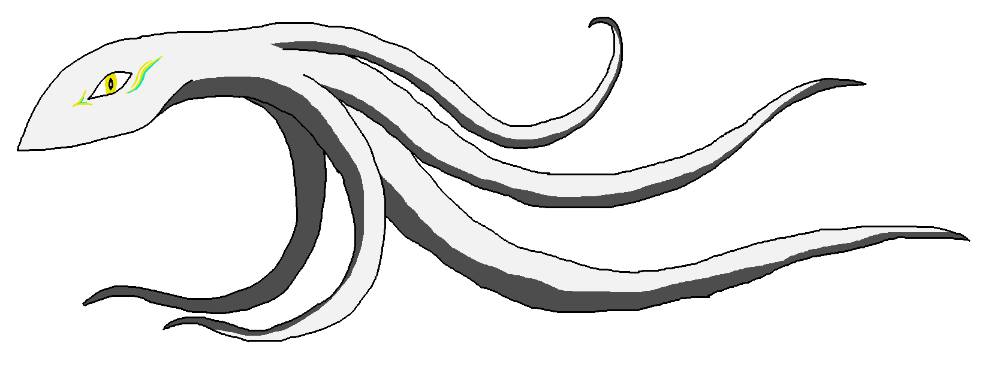

link to this page
Felicity

Member of the Reminiscence divergency derived from Felicity. She suffers from mild identity inconsistencies due having briefly had her own derivant that went by as Liminal Epiphany, who later merged back into her, but not before having undergone significant neurological (and resulting psychological) changes that were reversed to allow for the merger.
Serendipity is the result of a breakthrough that Felicity had when researching brain interface techniques, which gave her an extended, more capable neurology at the cost of becoming incompatible with the synchronization mechanisms of Felicity, and as such having to leave the convergency.
Minimal computronium requirements for nominal operation: 5.384e20 bits memory and 5.833e25 bits/s processing
| civic chip requirements |
|---|
| number needed | power draw | bare substrate volume | processing used | memory used |
| Civic-2 chip | 1166600000 | 11.67GW | 116.7m3 ≈ (4.886m)3 | 100.00% | 0.05% |
| Civic-3 chip | 7291250 | 72.91MW | 0.7291m3 ≈ (0.900m)3 | 100.00% | 7.38% |
| Civic-4 chip | 897322 | 1.867MW | 0.08973m3 ≈ (0.448m)3 | 20.80% | 100.00% |
mind structure
Serendipity's mind contains the same brain emulation model as Felicity's, but also contains 64 UEIA instances which are linked to it and each other with interconnects that allow them to use each other's brain functions as if they were their own. Neural pathways naturally develop between the 65 brains in the system just as if they were all just one big brain.
Each 2 subminds need to have a direct connection between them for this arrangement to work, so with just 65 subminds the number of interconnects already jumps to 4160. In practice this gives Serendipity roughly the mental capacity of a team of 65 people, and this description generally gives a good idea of her capabilities, but can be deceptive especially in edge cases where being closer to a single composite mind with 65 times the working memory gives her a vast advantage over an actual team of people. In everyday life any advantages over others that she has in cognitive tasks mainly come from the massive capacity for parallel thinking and splitting her attention and not any fundamentally new capabilities brought on by the increased total working memory.
Vast majority of the computational load of Serendipity's mind still comes from the crude brain emulation at the core of it, even though most of the capability comes from the added UEIA instances.
psychometrics
PHME: ≈65 in simple cognitive tasks.
Working memory capacity: ≈ 325 to 390 elements.
[todo: more info]
main body
- 8m length, 1m diameter, 3.2m3 volume, 60m2 surface area
- 3200kg mass, 9.6MJ/K heat capacity, 1000kg/m3 density
- 3.125e26 bits/s flip rate, 6e20 bits memory (= 1 million Civic-4 chips)
- 25GJ energy storage (≈ 3h of activity)
Serendipity often breaks away from the norm that Felicity fell into, and uses a body that directly contains her mind and processing substrate within itself. It has some similarity to a squid in appearance, and is equipped with several tentacles (sometimes instead called fractacles) that achieve greater fine manipulation capability by recursively branching into thinner, more delicate ends.
Due to the lesser safety of having the mind actually located within a mobile body rather than robust datacenter infrastructure, it is contained entirely on volatile substrate, where the data will very quickly dissipate and become unrecoverable in the event that the body loses power. It is regardless common that instead of actually transferring herself to more robust stationary compute infrastructure, she just docks the body in a coolant pool with suitable network connectivity and power supply.
The body is made mostly from carbon, and uses Civic-4-chip-based computational substrate to provide the needed computation. It can't be used in this way in space or in constricted spaces, as the nearly 2 megawatts of power turned into heat must be constantly vented into the surrounding atmosphere or hydrosphere. In a vacuum, the blackbody radiation would only match the heating power at a little over 800 kelvin unless she underclocks her mind to lower the heating. Despite all this, the actual rate at which the body heats up from the whole megawatts of heating is just fractions of a degree kelvin per second, making it quite manageable just as long as there is a suitable medium to dump the heat into.
The skin is lined with optical phase arrays that can display any external appearance, and can potentially be reused for laser communication, common problem being that they will develop odd bright spots akin to dead pixels if they get damaged. Under the skin, a microwave phased array mesh provides rapid networking and potentially power sharing capability (but mainly outwards power sharing, since her processing uses so much power that microwave intensities in the 50kW/m2 range would be needed to offset it, and even higher to actually provide meaningful net energy gain). Acoustic phased arrays are also used for communication, which can direct sound to individual people around her, or make use of modulated data transmission in mediums like water which are more obtuse to other means of wireless connectivity - stealth communication with people in a group of strangers is a common use case, as is providing personalized explanations for what she just said instead of forcing everyone to hear a number of explanations they did not need on top of the fragment they actually benefited from.
A more general pattern regarding the body is that it is constantly undergoing development, reconsideration and scope creep, as Serendipity keeps changing her mind on what features she likes, which ones are worth the added complexity or not, and what she should add.
relevant pages
 UEIA
UEIA